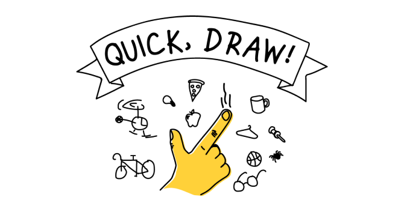

Штучний інтелект, інтернет речей, Smart-технології
Буклет «Людина чи машина?»
Штучний інтелект - це область інформатики, яка займається розробкою інтелектуальних комп’ютерних систем, інтелектуальних комп’ютерних програм, які імітують роботу людського розуму.
Такі інтелектуальні системи повинні виконувати творчі функції, мисленнєві операції, які традиційно вважаються прерогативою людини, - розуміння мови, уміння навчатися, здатність міркувати, робити висновки та передбачати, вирішувати проблеми.
Етичнi проблеми ШI
Ще на початку розробки програмного забезпечення люди оцінювали потенційні ризики штучного інтелекту та прогнозували можливість негативного впливу різних аспектів комп’ютеризації на людське суспільство.
Запанували дві думки щодо майбутнього ШІ (штучного інтелекту): утопічна (інтелектуальні системи новий відкриють шлях просвітлення, де люди стануть вільні від роботи, а ШІ лікуватиме від хвороб, вирішуватиме спори та якісно покращуватиме людське існування) та апокаліптична (інтелектуальні системи вкрадуть нашу роботу та ідентичність, використовуватимуться у воєнних цілях та вийдуть з-під нашого контролю).
Загроза людській гідності
Джозеф Вейценбаум стверджував у 1976 році, що технологія штучного інтелекту не повинна використовуватися для заміни людей на посадах, які вимагають поваги і турботи, таких як:
- Співробітник служби підтримки Клієнтів
- Терапевт
- Доглядальниця для літніх людей
- Солдат
- Суддя
- Поліціянт
Вайзенбаум пояснює, що від людей на цих посадах ми очікуємо справжнього почуття емпатії. Якщо машини їх замінять, ми опинимося відчуженими, знеціненими і розчарованими. Штучний інтелект, якщо його використовувати таким чином, є загрозою для людської гідності.
Міні-блог про відомих вчених, які займалися створенням штучного інтелекту
У Принстонському університеті проводив свої дослідження авторитетний фахівець у галузі штучного інтелекту, Джон Маккарті. Він та інші американські дослідники організували двомісячний семінар в Дартмуті влітку 1956 року. Дартмутський семінар не привів до появи будь-яких нових великих відкриттів, але дозволив познайомитись всім найбільш важливим діячам у цій науковій галузі. Результатом даного семінару була поява назви "штучний інтелект".
Джон Маккарті
Алан Тюрінг
Алан Тюрінг - англійський математик, логік, якого часто вважають батьком інформатики. Зробив вагомий внесок у дослідження штучного інтелекту, запропонував експеримент, який став відомим як тест Тюрінга. Тест, був створений задля визначення здатності машини проявляти поведінку, що схожа до поведінки людини. Він уважається пройденим, якщо 30% експертів не розпізнають штучний інтелект.
Сформулював поняття кібернетики як наукової дисципліни - Віктор Глушков, визначив проблеми найефективнішої взаємодії людини з машиною і шляхи їх розв'язання. Запропоновані ним побудови «око-рука», «читаючий автомат» поклали початок новим прикладним технологіям, унікальним розробкам, пов'язаних зі створенням так званого штучного інтелекту. Отже, машина - це не конкурент людини, а знаряддя, яке збільшує можливості людини.
Віктор Глушков
Quick, Draw!
Quick, Draw! - онлайн-гра, розроблена Google, яка пропонує гравцям намалювати зображення об'єкта або ідеї, а потім використовує штучний інтелект у вигляді нейронної мережі, щоб вгадати, що є малюнками. ШІ навчається за рахунок кожного намальованого гравцем малюнка, поліпшуючи свою здатність правильно вгадувати у майбутньому.
Машинне навчання - це підгалузь штучного інтелекту в галузі інформатики, яка часто застосовує статистичні прийоми для надання комп'ютерам здатності «навчатися» - тобто, поступово покращувати продуктивність у певній задачі, з даних, без того, щоб бути програмованими явно.
Грати
AutoDraw